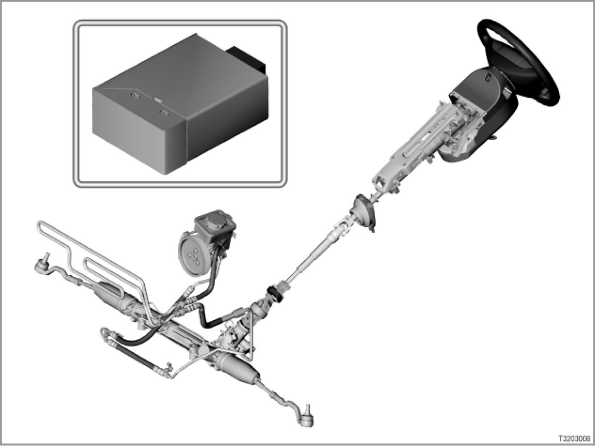

Servotronic E83
32 03 03 (059)
Servotronic
E83

Introduction
The Servotronic does not regulate the steering force support in a conventional way by using the engine speed, rather it is dependant upon the car's road speed. The Servotronic regulates the hydraulic pressure in the power-steering pump. Adaptation of the hydraulic pressure to the car's road speed has the effect of:
- High steering force support at low road speeds
- Minimum steering force support at high road speeds
This means that minimum force is required for steering force at slow road speeds. As the road speed increases the steering force support is continuously reduced. Contact to the road surface therefore becomes more direct and steering is more precise. Consequently, steering is very comfortable and maneuverability is maximized, for instance when parking and maneuvering at slow speeds.
[system overview ...]
New: In E83 the Servotronic is integrated in its own control unit.
The Servotronic is available as special equipment (option 216).
Brief description of components
The following control units are involved in the Servotronic:
- Servotronic control unit (SVT)
The SVT control unit specifies the nominal values for controlling the Servotronic valve (hydraulic pressure). The SVT control unit is connected to the PT-CAN (powertrain CAN) and K-Bus (body bus).
- DSC control unit (Dynamic Stability Control)
The DSC control unit delivers the car's road speed signal. The DSC control unit and SVT control unit are connected by the PT-CAN.
- DME or DDE (Digital Engine Electronics or Digital Diesel Electronics DDE)
The Servotronic receives the signal of whether the engine is running from the DME or DDE over the PT-CAN. The Servotronic only activates the Servotronic valve when the engine is running.
- Instrument cluster (KOMBI)
The instrument cluster delivers the terminal status (e.g. terminal 15 ON) and the kilometer reading.
The following actuators are controlled by the Servotronic:
- Servotronic valve
The Servotronic valve is an electro-hydraulic converter located in the power-assisted steering oil circuit. The Servotronic valve restricts the hydraulic current and consequently reduces the hydraulic pressure.
The Servotronic valve is activated by a characteristic curve delivered by the SVT control unit.
System functions
The Servotronic is based upon the following system functions:
- Initialization of the Servotronic
- Recording of the speed
- Supplying the Servotronic valve with power
- Undervoltage detection and overvoltage detection
Initialization of the Servotronic
The Servotronic is active from terminal 15 ON.
A short initialization phase for the Servotronic (under 1 second) is necessary when the engine starts in order to reach the characteristic curve for a low road speed as fast as possible.
A plausibility check for supplying the Servotronic valve is performed during the initialization phase.
Recording of the speed
The road-speed signal is calculated by the DSC and supplied to the PT-CAN. The Servotronic specifies an acceleration value for plausibility of the road-speed signal. A road speed is calculated from the acceleration value.
At a low acceleration the road-speed signal supplied by the DSC is used.
At a higher acceleration the Servotronic control unit calculates the road speed internally. The road speed is stored in the Servotronic control unit.
Supplying the Servotronic valve with power
The Servotronic valve is supplied with power in response to the car's road speed. The power-assisted steering characteristic is memorized in a characteristic curve. The characteristic curve specifies the power based on the car's road speed.
The characteristic curve is written using 16 reference points.
The Servotronic valve is no longer supplied with power when the engine is OFF (over the PT-CAN). Minimum steering force support is set (high road speed) when the Servotronic valve is no longer supplied with power.
Equally, the Servotronic valve is also no longer supplied with power if there is a fault-memory entry.
Undervoltage detection and overvoltage detection
The Servotronic valve is no longer supplied with power under the following conditions:
- Supply voltage less than 9 volts
- Supply voltage higher than 17 volts
Voltage dips during ignition faults are detected.
Switch-on conditions
Switch-on conditions for the Servotronic are:
- Terminal 15 ON
- The engine must be running
The Servotronic only activates the Servotronic valve when the engine is running.
When the engine has started and there a road-speed signal is not supplied the Servotronic sets the maximum steering force support.
If a plausible road-speed signal is detected the Servotronic valve is activated by the characteristic curve.
If there is still not a (or not a plausible) road-speed signal 5 seconds after the engine has started the minimum steering force support is set.
Notes for service staff
Service staff should note the following points:
- General information:
- Diagnostics: ---
- Encoding/programming: ---
- Car and Key Memory: ---
Subject to alteration due to misprints, errors and technical modifications.